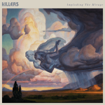

Music Reviews
-

Bright Eyes Down in the Weeds, Where the World Once Was
Though Bright Eyes' reunion is a cause of celebration, Down in the Weeds is at odds with itself—where the band balances music that is ambitious in scope with some of Oberst's most nakedly personal work.
Juan Edgardo Rodríguez reviews... -
blackbear everything means nothing
Matthew Tyler Musto's (aka blackbear) fifth studio album might be the ideal music for getting drunk, but it’s also the audio equivalent of a hangover: exhausting, numbing, and never-ending.
Ethan Gordon reviews... -
The Lemon Twigs Songs for the General Public
While there’s moments of excellence overall, The Long Island duo's third LP feels like a self-aggrandizing duo getting high on their own supply.
Ethan Gordon reviews... -

The Killers Imploding the Mirage
The Killers return with anthemic passion, sounding rejuvenated and hungrier than they have for years.
Joe Marvilli feels fire in bone... -

Young Jesus Welcome to Conceptual Beach
On ther fourth LP, the eclectic LA indie-rock band brings their diverse musical backgrounds together into a sound collage that feels authentic and well-worn.
Juan Edgardo Rodríguez reviews... -

Biffy Clyro A Celebration of Endings
A Celebration of Endings is a curious, often potent blend of sounds and influences for the Scottish rock band. While lyrically dark, its exploration is more often than not a very satisfying ride into the unknown.
Tom Parmiter reviews... -

Glass Animals Dreamland
Dreamland is the UK psych-pop's hazy, nostalgic treatise on how growing up in the 1990s (and the virtual age) can shape a musician. But for an album about the exhaustion of growing up in the shadow of digitality, they make little to no effort to open up on these themes.
Ethan Gordon reviews... -

The Loft Club Dreaming the Impossible
The British five piece redefine the stigma about being earnest in music on their debut album.
Ethan Gordon reviews... -
JARV IS... Beyond the Pale
The Pulp frontman returns with an enjoyable new project despite its distracting concept.
Matthew Smith reviews... -
Courtney Marie Andrews Old Flowers
Old Flowers is one of the singer-songwriter's most consistent and wonderful collections of unique, heartfelt, and depressing songs yet.
Ethan Gordon reviews...